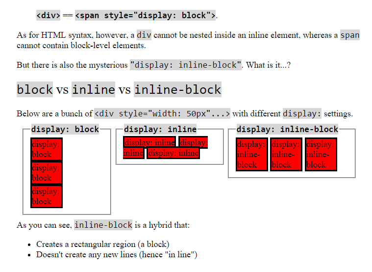

CSS Concepts
February 7, 2016
display: inline; VS. display: inline-block;
In HTML, elements have a default display value which is either inline or block, depending on what the element is w3schools has some good examples of which elements start off with inline and which start off with block. Generally, the block elements have a width that spans the entire page or container they are in while inline elements take up the minimum space required to fit all of their content. Another difference between the two is that inline elements are positioned one right after another on the same line with no spacing while a block element will clear the rest of the line and any following element (whether it is inline or block) will start below it rather than to the right on the same line. Even though all elements have a default display value it is easy to override it by defining the display as either inline or block.
A third option for display is inline-block which combines certain aspects of each. Inline-block elements act like inline elements because they are positioned one right after each other on the same line but can accept specified height and width values which will be respected. Inline elements will not follow any height and width but block elements will and while inline elements take up as little horizontal space as possible, block elements will take up as much horizontal space as possible. Inline-block is a combination that adds the same-line horizontal positioning similar to the float property of inline elements to the defined height and width of block elements.
It can be difficult to understand the differences between inline, block, and inline-block through a verbal description but this visual repersentation from Dustwell.com makes the concept much easier to follow:
